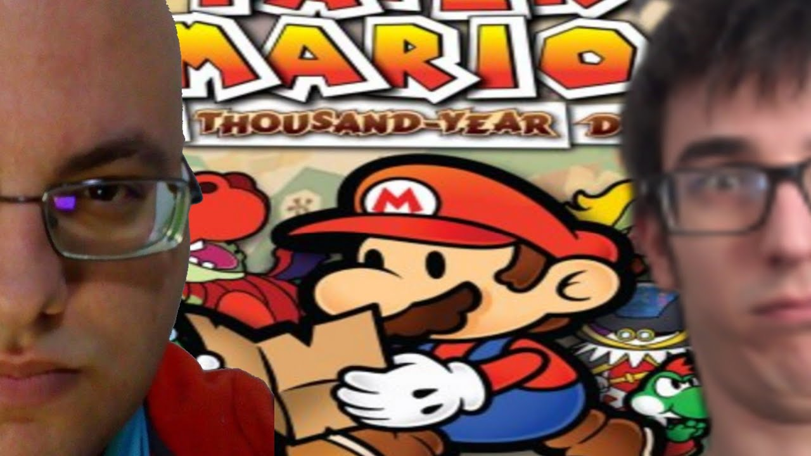

Memes de RanguGamer
Zapato. | Azul | Comer Niños
Su origen se dió en un directo de Paper Mario: The Thousand-Year Door, en el canal de twitch de EricRod, actualmente se puede encontrar en el canal de RanguGamer

En un punto del juego, Mario Gonzales (como se le conoció en la serie) se comunica a través de un dispositivo muy similar a un Nintendo DS, haciendo una broma, dijeron que estaba jugando a Brain Training.

Seguido de esto, comenzaron a decir "Azul" de una manera muy estupida como si estuviesen jugando Brain Training, causando gracia a Eric y a quienes disfrutaban del directo